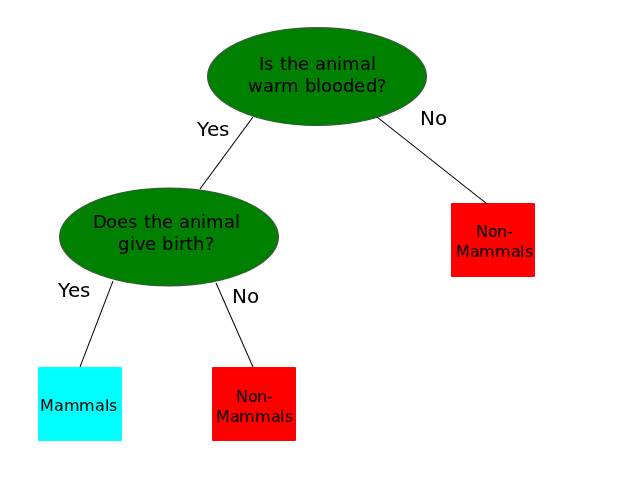
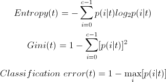
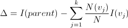
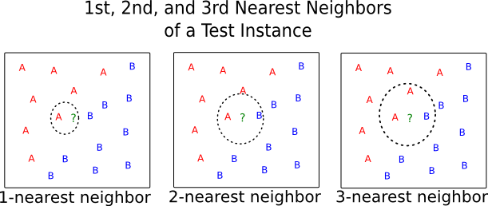
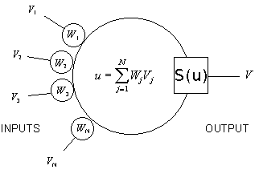
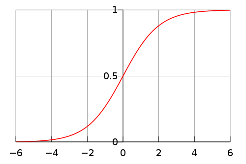

Classification
Introduction
Unlike the unsupervised learning that was covered in the previous section on clustering, classification is a supervised algorithm that attempts to classify new data according to previous known classes. For example, take species of animals. The classes (except in rare cases) for species are already known. An animal is either an amphibian, a reptile, a fish, a bird, or a mammal. There are certain characteristics that make an animal a particular species. Using data about animal characteristics for which the class is already known, a model can be developed for correctly classifying an animal based on these characteristics. Then, when a new animal is discovered, it too can be correctly classified according to it's characteristics. This is a supervised system because the class labels are all known in advance, and the goal is to apply the correct class label to the newly discovered animal. A few different algorithms can be used to develop this classification model. This section will cover a few of these classifiers, including decision trees, rule-based classifiers, Bayesian classifiers, nearest neighbor classifiers, and artificial neural networks. After the discussion of algorithms, a Ruby implementation of an artificial neural network is presented and discussed.
Decision Tree Classification
A decision tree is just that, a tree used to make decisions. Each node on the tree asks a question. This is most commonly a binary question, as most decisions trees are binary, meaning each node has at most two child nodes. For example, take a look at the tree above. This might be a tree used in the animal classification problem. The first node asks "Is the animal warm blooded?". If so, then the algorithm would continue down the left branch of the tree, and the next question might be "Does the animal give birth?". A data object would continue down the tree in such a fashion until it landed in a leaf node. Leaf nodes of the tree contain the classification of the object. In other words, when the object traverses a tree and gets to a leaf node, that node will define it's classification. For example, if an animal is warm blooded and it gives birth, then it is a mammal, and the classification is complete. Since decision trees need to ask questions with discrete answers, data may need to be pre-processed and discretized. For example, if the problem is to classify whether or not someone is a good candidate for a mortgage, then things like house-hold income and credit score might be taken into account. Since these are continuous attributes, they may need to be discretized into bins. For example, a node might split based on the condition of "is income > $45,000 a year?", or "is credit score less than 600?".
A decision tree can be built using Hunt's algorithm, which is a recursive process. At each node, if all the records from the training data in that node share the same class, then the algorithm is complete, and the node is left as a leaf node. If the node contains records that belong to more than one class, then the records need to be divided according to an attribute test condition. This process is repeated until all items are in leaf node with fellow class-members, or some other stopping condition is met. Attribute test conditions are often binary splits, though multi-way splits are also possible. The hardest part about building the tree is selecting the best attribute test condition, in other words, the best split. There are three common impurity measures used to measure the best split. Since the goal of a decision tree is to have nodes consisting entirely of members of a single class, the impurity of a node is the extent to which that is not the case. For example, a node with 2 members of one class, and 0 members of another class has zero impurity. A node with 1 member of one class, and one of another, however, has the highest impurity. The three most common measures of impurity are entropy, gini impurity, and classification error. They are defined using the following equations, where $p(i|t)$ denotes the fraction of records that belong to class $i$ at a given node $t$, and $c$ is the number of classes:
The performance of a test condition is determined by comparing the degree of impurity in the parent node to that of the child node. The larger the difference, the more pure the child nodes are, and the better the test condition. The measure is called simply gain, and is denoted with a delta symbol. When entropy is used as the impurity, this measure is referred to as information gain. The equation for information gain is:
Where $I(\cdot)$ is the impurity measure of a given node, $N$ is the total number or records at the given node's parent, $k$ is the number of attribute values, and \(N(v_{j})\) is the number of records associated with the child node, $v_{j}$.
As mentioned earlier, the process of building a decision tree continues until some stopping condition is met. This stopping condition could be when all the leaf nodes are pure, or when the number of records fall below a certain threshold. For example, when 90% of the records have been classified, it may be a good time to stop building the tree. If the tree gets too large, it could succumb to phenomenon of model overfitting. This is when the model is overly trained to the training data, so that while it does a great job of classifying the training data, it is only good at classifying that training data, and fails to successfully classify new data. In order to prevent model over-fitting, decision trees can be pruned after the are build. There are a few different ways to prune the tree, but the overall goal is to improve it's generalization capabilities by reducing the size of unnecessarily long or wide branches. Decision trees are best used in situations where knowledge of how the model is doing the classification is useful. Since the attribute test at each level can be seen, a decision tree can give a user insight into how best approach and walk through the classification process. This could be considered a "white box" model, in contrast to the "black box" of artificial neural networks, which will be discussed later. Accurate decision trees can also be created using very few training records, which is another benefit of this method.
Rule-Based Classification
Rule based classifiers are similar to decision trees in that it is also expressive (a "white box" classifier), and are also often represented as a tree, since it conducts a similar rectilinear partitioning of of the attribute space, but differ in how they create these partition. A rule based classifier classifies records based on a series of rules, called a Rule Set. Unlike a decision tree, where each record follows a single distinct path through the tree, a single record can trigger multiple rules within a rule set. A rule set with $k$ rules can be defined by the equation.
Each individual rule is represented in the following manner.
The left hand side of the rule is called the rule antecedent, or precondition. This is the conditional part of the rule. The rule antecedent defines what combination of attributes must be true, or set of factors that need to be met. The right part of the rule, or rule consequent, is the resulting classification. Therefore, a rule says that given a set of conditions (the antecedent), and object should be classified as a particular class (the consequent). Below is an illustration of this using the animal taxonomy problem that was used in the previous section. A rule based classifier might discover the rule that if an animal does not give birth and it flies, it should be classified as a bird. Assuming that this is the first rule of a rule set, it would be written as follows.
The measures used to evaluate the quality of a classification rule like the one above are coverage and accuracy. The coverage of a rule is a measure of how many records in a dataset that the rule is applicable to. When a a data record matches the conditions in the antecedent of a rule, it is said to cause that rule to "fire". Coverage, then, is a measure of what proportion of records in a data set cause a rule to fire. It can be calculated for a rule $r$ as follows, where $|A|$ is the number of records that satisfy the rule antecedent $A$ (ie. number of records that fire the rule), and $|D|$ is the total number of records in the dataset $D$.
While coverage is a measure of how wildly applicable the rule is to the dataset, accuracy is a measure of how good the rule is within its coverage domain. In other words, for those records that satisfy the rule antecedent, how many also satisfy the rule's consequence. In the example above, accuracy for \(r_{1}\) would be a percentage of how many creatures that do not give birth and fly are actually birds. Accuracy can be calculated as follows, where \(|A \cap y|\) is the number of records that satisfy both the antecedent $A$ and consequent $y$ for a rule $r$.
A rule based classifier assigns the class defined in the consequent for every data object the fires that rule. As a result, a data object might be assigned more than one class if it satisfies the antecedent for more than one rule. On the other hand, a record might not receive any class if it satisfies none of the antecedents for any of the rules in the rule set. A rule-based classifier needs to be prepared to handle both of these cases, and be able to decide between classes in the case of conflict, as well as be able to make a reliable prediction for records not covered by any rules. There are two common approaches to overcoming the problem of conflicting class labels. One is to use ordered rules. In this approach, rules in a rule set are according to their priority, a record is classified with the consequent for the highest ordered rule that it fires. Another approach is using an unordered rule set, and each class assigned to a record is a "vote" for that class. The class with the most votes after all pertinent rules have been fired is the class used to classify the record. A rule set is considered "mutually exclusive" if no two rules are triggered by the same record, and considered "exhaustive" if all records the the dataset trigger at least one rule.
Rule-based classifiers can be built in two ways. The first is to extract rules directly from the data. This approach conducts a rectilinear partitioning of the attribute space. Imaging the dataset plotted on two dimensional graph, this approach entails drawing small rectangles throughout the data, with each rectangle representing a particular class label. The data points within that rectangle would be members of that class, and the lines dividing up the data would represent rules generated from the data. Another approach is to extract rules from another classification method, such as a decision tree, or maybe to help make more sense out a "black-box" classifier like an artificial neural network. A popular algorithm for direct rule induction is the RIPPER algorithm. The RIPPER algorithm is a general to specific algorithm, meaning it would start with a very general rule, like is it an, and move down to more specific rules, like does it give birth. It starts with an empty rule-set, and repeatedly adds rules until all positive examples, in other words, records containing the class for which is developing a rule-set, are covered. It is a greedy algorithm that can develop large rules with many conditions. Once the rule-set is constructed, an optimization routine prunes some of the conditions, making the antecedent smaller and more fit to the training data. An example of an indirect form of rule induction would be extracting rules from a decision tree. Rules are extracted for each complete path through the tree, from root to a leaf node. The antecedent of the rule is then reduced by removing one of the conditions, and if the error rate is less than the original rule, it is kept. This pruning continues until the error rate can be improved no more. Once the rules have been generated, they are grouped by class and counted. The class with the smallest number of rules is given the highest priority since these rules are considered the best, and the rest of the rules are ordered accordingly by their class.
Nearest Neighbor Classifiers
The two previous classifiers, rule and decision based, are examples of eager learners. They are called this because they eagerly create a model as soon as training data is available. In other words, they use the training data to create a model which they store, and can later apply to new data. Another type of classifier is a lazy learner. These classifiers delay the process of modeling training data until they need it classify new data. It simply stores the attribute space of the training data, and then compares new data to these attributes when it receives the new data. A nearest neighbor classifier is an example of a lazy learner. It waits until it receives test data (or new data, once successfully tested), and then determines which of it's training data the test data is most similar. The $k$-nearest neighbor algorithm does this by finding k points from the training set that are closest to the new data that needs to be classified. The following picture illustrates this process.
In the above example, the classifier was trained with data that consisted of 2 classes, $A$ and $B$. The test instance $?$ is the object that needs to be classified. The classifier works by creating a list of k-nearest neighbors. Given a set of training data, it starts by calculating the distance between each record in the test data $z$ and all the records in the dataset $D$. It then selects $D_{z}\subseteq D$, in other words, the set of $k$ closest training examples to test record $z=({x}',{y}')$. So, in the above example, a 1-nearest neighbor algorithm would produce the set $\{A\}$, while a 2-nearest neighbor would produce $\{A,B\}$, and a 3-nearest neighbor would produce $\{A,B,A\}$. Once the set of $k$ nearest neighbors has been found, a voting scheme is used to determine the class of the test record $z$, or in the case of the above picture, the test instance $?$. The simpilest method is a majority voting scheme, where the class is discovered using the following equation.
In the above equation, $v$ is a class label, $y_{i}$ is the class label for one of the nearest neighbors, and $I(\cdot)$ is an indicator function that returns the value 1 if its argument is true, and 0 if not. Using this method, each of the nearest neighbors gets an equal vote in determining the class of the test record. While this seems logical in the illustration above, imagine a case where the neighbor set of $\{B,A,A\}$ is produced, but the $B$ is much closer to the test instance than either of the $A$'s. Using the above formula, the item would be classified as an $A$. However, if weight were taken into account, the item may instead be classified as a $B$, which is might actually be more similar to. To remedy this problem, a distance-weighting voting method could be used. Distance-weighted voting would use the following formula.
Notice the only change here is to weight each vote by $w_{i}$, which is equal to \(1/d({x}',x_{i})^2\) where $d(\cdot)$ is a measure of distance. This has the effect of giving closer training records more say in the class of new test records.
Nearest neighbor classifiers are a lot more flexible than decision and rule based classifiers. Because they do not build a model, they are less computationally expensive up front, and a lot easier to update. For example, if all the known values of a nearest neighbor classifier were stored in a database, new records could easily be added. If the algorithm was set up to test against known items in this table, then every time the algorithm ran it would have the most up to date data. With decision-trees or artificial neural networks, the model would have to be completely rebuilt every time new data wanted to be including, and this would be a computationally expensive process. A case in which such flexibility is desired would be a case for using a nearest neighbor classifier. Nearest neighbor classifiers are also capable of arbitrarily shaped decision boundaries, unlike the rectilinear boundaries of decision-trees and rule-based classifiers. Another difference between nearest neighbor classifiers and decision or rule based classifiers is that nearest neighbor classifiers make classification decisions based on local information, since it only uses the $k$-nearest items in the data to determine class. Decision and rule based classifiers construct a global model, with information from all the data, that they use to classify. Because of the localized classification decisions, a $k$-nearest neighbor classifier is more susceptible to noise, especially with low values of $k$.
Bayesian Classifiers
Bayesian classifiers are used to model a probabilistic relationship between a set of attributes and the class label which it belongs to. This is good for cases where two identical test records are not of the same class for various reasons. Predictions, such as predicting whether or not a person will develop a specific medical condition, often fall under this category, and are a good case for the use of a Bayesian classifier. A Bayesian classifier uses Bayes' theorem of probability to classify objects with non-deterministic relationships to their classes. Given two variables, $X$ and $Y$, Bayes' theorem relates the conditional probabilities of $P(A|B)$ and $P(B|A)$ meaning the probability of the first variable given the second. TIn the case of classification, Bayes' theorem can be used to related the conditional property of $P(Y_{1}|X)$ and $P(Y_{0}|X)$, assuming $Y$ is a class label (with the subtext representing it's presence) and $X$ is an attribute set. The conditional probability of $P(Y|X)$ is also known as posterior probability, which is opposed to its prior probability, or $P(Y)$. The posterior probability is often defined in terms of prior probability with the following equation.
The model for a Bayesian classifier is built by calculating this posterior probability for all possible combinations of $X$ and $Y$ in the training data. For this reason, the quality of a Bayesian classifier model is often dependent on having enough records to train it well, unlike a decision tree where a good model can often be built using very few records. The animal taxonomy problem is not applicable here, since those are deterministic class relationships, so take the example of determining a person's eligibility for a home loan. If given an attribute set of (Age = 30, Married = No, and Homeowner = No), the model would determine the probability of each class of defaulted borrower, "Yes" and "No", against each attribute in the attribute set. If $P(Yes|X)\gt P(No|X)$ then the record is classified as "Yes".
Bayesian classifiers hold up well against isolated points of noise. They do so because the results are always the average of a many training records, and therefore the noise gets averaged out. They also perform well against irrelevant attributes. An irrelevant attribute should be evenly distributed amongst all classes, and are in a sense averaged out by the meaningful attributes that determine the objects class. Bayesian classifiers do not perform well against correlated attributes though. The conditional probability used by Bayes' theorem assumes a conditional independence amongst attributes. Correlated attributes will violate this independence, and sway the results accordingly. However, a little pre-processing to remove such attributes can avoid this problem.
Artificial Neural Networks
An artificial neural network is a very different approach to classification that the methods previously discussed here. It is different because it is a "black box" classification method. The process of classification, and more importantly, the reasons why objects are classified how they are, is virtually unknown to the user. In a decision or rule based classifiers, the decision tree can be drawn, showing the exact decisions being made or rules being applied at each step. While the inner-workings of an artificial neural network can be visualized, they are virtually meaningless to a user. An artificial neural network consists of layers of neurons, or nodes. I has at least three layers, sometimes more. It has an input layer, a hidden layer, and an output layer. The output layer provides the classification, and the input layer has a number of nodes equal to the number of attributes in the data objects that are to be classified. An artificial neural network will only handle numeric input, and will only product numeric output. Because of this non-numeric input must be discretized before building a model. Also, the output layer usually has a number of nodes equal to the number of classes, and will produce a 1 for that node if the object is of that class, and a 0 if not. Before going further into how this works, take a look at the below illustration.

The hidden layer is composed of artificial neurons. Every input node connects to each artificial neuron, and each artificial neuron connects to every output nodes. The out put of the artificial neuron is the result of the weighted input to the neuron. The input to the neuron is the sum of all the output weights from all the nodes in the previous layer, weighted according to the weight of the edge that the output came in. In other words, each line, or edge, connecting an input node to an artificial neuron in the illustration above has a weight to it. The output of a node is multiplied by the weight of the edge it is connected to the next node with. The input to each artificial neuron in the hidden layers is equal to the some of all these weighted inputs going into it. If the sum of these inputs is above a certain threshold, it triggers a firing function, which is usually a sigmoid function such as $tanh()$. Below is an illustration of an artificial neuron, where $S(\cdot)$ is a sigmoid function.
Here is a graph of the logistic curve, which is an example of a sigmoid function.
The reason this is often referred to as a firing function is because there is always a threshold below with the output of the function will always be 0. In the example above that threshold is -6. Therefore, the input has to be above -6 in order to get the neuron to "fire", or produce a value other than 0. After this there is a small window within which output can change drastically based on a little change in input, for example between -2 and 2 in the above graph. Finally, after a certain point the function will always produce a 1, which happens after an input of 6 in the above graph. An artificial neural network is trained by adjusting the weights of the edges between nodes. Because of the nature of the sigmoid "firing" functions, little change in input can produce a large change in output, which will greatly effect the sums coming into the nodes in the next layer. It is because of the sigmoid function that slight changes in weight have the effect that they do.
The code below shows an implementation of an artificial neural network. For this implementation, the number of layers, and nodes for each layer, are provided as an initialization arguments. There are other methods for determining the number of layers and nodes, but for this example is was kept simple to focus on the meat of the artificial neural network, backpropagation. The network is initialized with random weights for each edge. The sigmoid function used is the $tanh()$ function. Once the network is built, the input values are fed forward through the network. This produces an output. During the training stage, the desired output is known, so the difference between the desired output and the actual output is calculated, and produces the network's error. The amount of error effects how much the weights are adjusted. The backpropogation algorithm moves through the network backwards (hence "back"-propogation), so starting with the last hidden layer and moving to the input layer, updating weights as it goes. Since this algorithm is meant as a simple example, it's process of moving through the layers was hard coded since it was known it would only be tested with a single hidden layer, but this could easily be updated. Each Layer is basically just a two dimensional array, that has a list of weights. So, the number at @layer[1][1] would be the weight from the second node in that layer to the second node of the next layer.